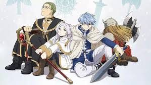

Animes
Frieren e a Jornada para o Além: O Tempo e as Relações

Oi pessoal, tudo bem? Eu tô no mood de indicar todos os meus favoritos pra vocês que estão esperando sua vez na fila de resenhas. 😂 O escolhido da vez é o anime Frieren e a Jornada para o Além, uma das melhores produções de 2023-2024.
Sinopse: Após uma missão de 10 anos ao lado do herói Himmel e seu grupo, a poderosa maga Frieren derrotou o Rei Demônio e trouxe paz ao mundo. Como uma elfa, Frieren tem uma vida de mais de mil anos pela frente. Ela promete retornar para seus amigos e, assim, parte em uma jornada solitária. 50 anos se passam quando Frieren finalmente volta para visitar Himmel e os outros. Embora ela não tenha envelhecido nada, seus amigos têm pouco tempo de vida restante. É então que Frieren testemunha a morte de Himmel, o que a leva a lamentar não ter passado mais tempo junto dele. Com esse arrependimento em seu coração, ela embarca em uma nova jornada com o objetivo de se conectar e conhecer melhor as pessoas. Ao longo dessa viagem, a elfa Frieren encontrará diversas pessoas e viverá incontáveis aventuras emocionantes!
Desde que conheci essa produção, sempre que alguém me pede uma indicação de anime mais adulto e menos bobo, eu penso em Frieren. Não porque as cenas sejam violentas ou porque existam gatilhos que tornam a história mais tensa e sensibilizante, mas sim porque Frieren traz um tema central que dialoga com todos nós: a brevidade do tempo e as consequências disso nas nossas relações, como a perda e o luto.
Frieren é uma elfa de mais de mil anos. Durante 10 deles, ela viajou com um grupo liderado por Himmel e acompanhada também por Heiter e Eisen, com o objetivo de destruir o Rei Demônio e trazer a paz ao mundo novamente. Ao fim dessa década, eles celebram sua vitória, se despedem e combinam de se ver novamente na próxima chuva de meteoros – a questão é que ela acontecerá daqui 50 anos. Os humanos do grupo apreciam o tempo que viveram juntos mas, pra Frieren, a única pertencente a uma raça de vida longa, esse momento é só mais um piscar de olhos em sua longa trajetória. Quando 50 anos se passam e ela reencontra os amigos, eles estão envelhecidos e em seguida Himmel morre, causando um tremendo choque em Frieren ao perceber que sabe tão pouco sobre aquele que lhe foi tão importante. Esse é o gatilho para que a elfa parta em uma longa jornada que visa conhecer melhor os seres humanos, algo que até então ela não havia cogitado.
Na nova jornada de Frieren, ela acaba formando um novo grupo de forma natural: primeiro, ela aceita Fern como aprendiz (depois de um truque sagaz de seu ex-colega de grupo, Heiter, que adotou a menina e deseja que ela aprenda magia com Frieren) e, depois, Stark se une às duas (sendo ele também um aprendiz de seu antigo companheiro Eisen). É simbólico como Frieren se vê “liderando” aqueles que herdaram as habilidades de seus antigos companheiros, como um ciclo que se encerra – ou recomeça?
Para Frieren, um dos desafios de lidar com humanos – ainda mais dois tão jovens – reside no fato de ela frequentemente esquecer de quanto tempo ela dispõe, o que não ocorre com Fern e Stark, cujas vidas são curtas. Fern frequentemente perde a paciência com Frieren devido ao seu hábito de assumir “missões” que Fern julga desimportantes. Acontece que Frieren é uma apaixonada por magia, e sempre que alguém lhe oferece um tomo ou promete alguma informação, ela acaba por se estabelecer no vilarejo da pessoa por meses. E nessas situações, Fern se frustra, desejando progredir com Frieren em sua jornada. Contudo, diferente da época em que a elfa viajou com Himmel e seus antigos companheiros, agora Frieren tem consciência de que precisa se esforçar pra entender os humanos também. Por isso, ela ouve Fern e busca um meio-termo pra que ambas consigam conviver em harmonia, cada uma cedingo um pouquinho. Podemos dizer que Frieren é como uma figura materna (ou irmã mais velha) pra Fern.
Ao longo da jornada do novo trio, eles conhecem pessoas que fazem parte do seu grupo brevemente e depois partem. O anime dá dimensão ao espectador de que meses se passam, de que existem saltos temporais na história, e isso ajuda na verossimilhança dos laços formados. Em muitos animes as relações surgem e se fortalecem num curto espaço de tempo, mas em Frieren e a Jornada para o Além, os personagens passam muito tempo juntos, crescendo, se aprimorando e aprendendo uns com os outros. Ainda que Frieren tenha um objetivo principal (chegar a um local onde, diz-se, é possível falar com as almas dos mortos), o anime faz questão de valorizar cada etapa da sua trajetória pra chegar lá. O caminho é tão – ou mais – importante quanto o destino.
Com uma arte impecável e uma trilha sonora belíssima, Frieren e a Jornada para o Além é também uma jornada em busca de autoconhecimento por parte da protagonista. Diferente da elfa que venceu o Rei Demônio com o Herói Himmel, a maga agora é alguém que deseja aprofundar suas relações com as pessoas e entender o que se passa no coração humano, mesmo que ela tenha uma vivência completamente diferente. Se no início a ideia que ela passa é de falta de empatia e consideração pelos antigos companheiros, logo percebemos que, na verdade, sua ótica é muito diferente da nossa – e que proteger o próprio coração quando todos ao seu redor partem antes de você faz muito sentido. Ainda assim, após finalmente entender a dor da perda, Frieren é corajosa e se coloca na posição de vulnerabilidade pra se conectar às outras pessoas. Por meio de sua amizade com Fern e Stark, a protagonista encontra sua segunda chance pra fazer diferente. Se você busca uma história reflexiva, bem contada e com personagens inesquecíveis, sugiro que você dê uma chance a Frieren e a Jornada Para o Além.
Ficha Técnica
- Título original: Sōsō no Frieren
- Ano de lançamento: 2023
- Direção: Keiichirō Saitō
- Elenco: Atsumi Tanezaki, Kana Ichinose, Nobuhiko Okamoto, Chiaki Kobayashi, Hiroki Tôchi, Yôji Ueda